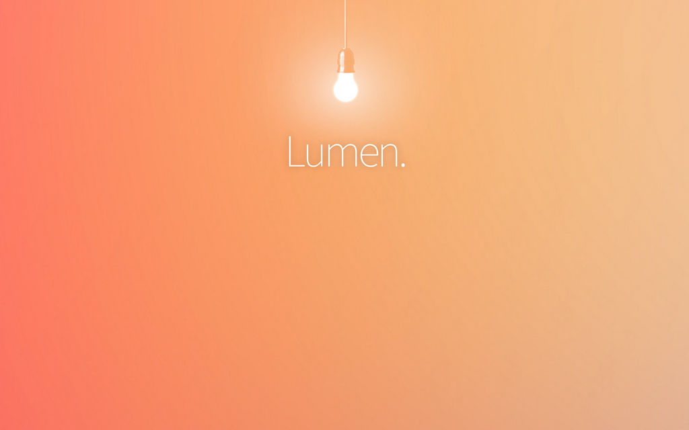

Laravel Lumen & Microservices

What is Lumen?
Fast
Smaller footprint
Laravel Components & follows Laravel versioning
Opt-in rather than opt-out
Faster routing through
nikic/fast-route
Supports: Blade, caching, commands, controllers, Eloquent ORM, Dependency Injection, queueing.
What is Lumen not?
Does not support Laravel 5 packages
Very minimal config system — using environment variables
Router has less feautures
Should I use Lumen for everything in my next project?
Probably not...
Lumen use cases
Tiny websites (Status page, contact info page)
High-traffic component of your website
Example: Envoyer cron job heartbeat
Microservices
The competition
Slim
Silex
Fat-Free Framework
Demo
lumen.laravel.com
Questions?